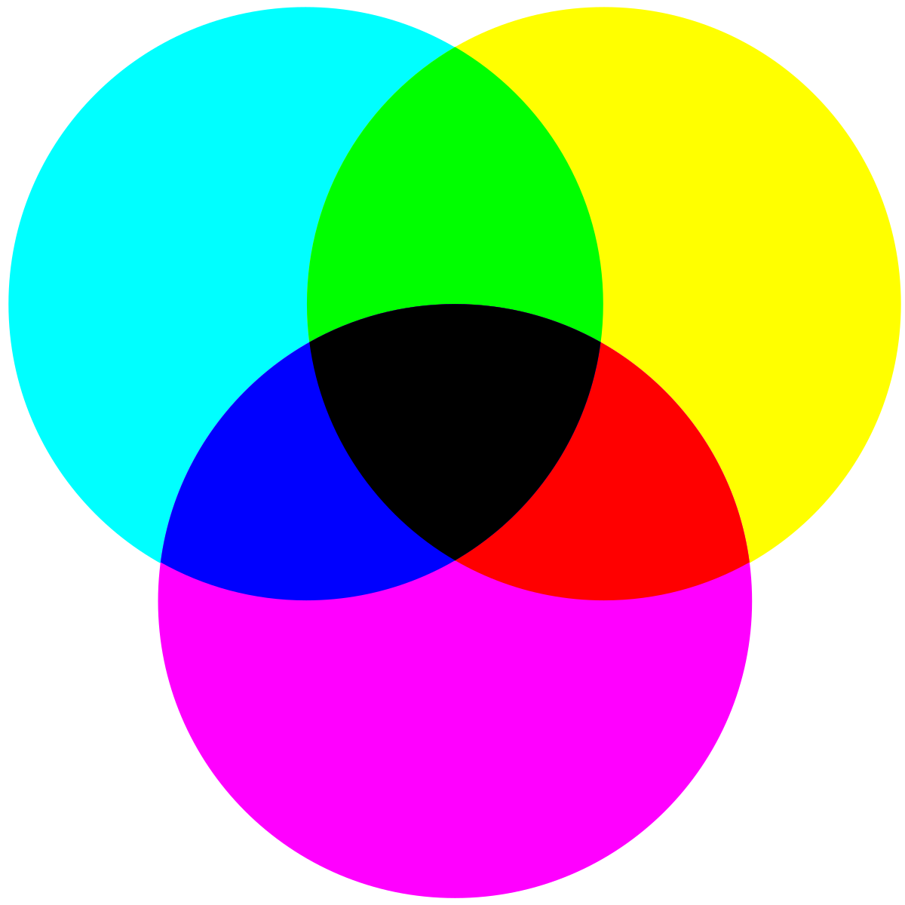
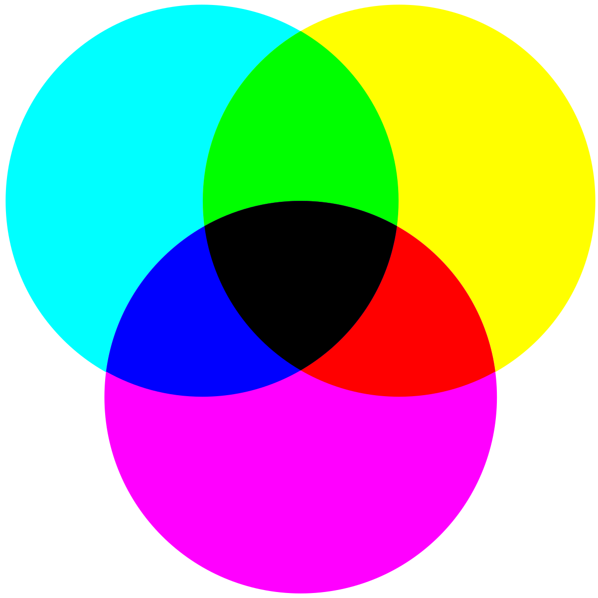

Het RGB model
Een beeldscherm bestaat uit veel kleine punten die we pixels noemen. Elke pixel bevat drie lichtbronnen: een rode, een groene en een blauwe. Door de intensiteit van deze lampjes te veranderen, kan het scherm verschillende kleuren aangeven. Als je een scherm van dichtbij fotografeert en inzoomt, zie je dat elke pixel uit deze drie kleuren bestaat. Dit wordt het RGB-kleurmodel genoemd, waarbij RGB staat voor Red, Green en Blue. In dit model worden lichtkleuren gemengd, hierdoor kan je allemaal soorten kleuren maken. Zo krijg je bijvoorbeeld geel door rood en groen licht samen te voegen. Het RGB-model werkt met een zwarte achtergrond, wat betekent dat als de lampjes uit zijn, de pixel zwart is. Door de lampjes in te schakelen, ontstaan er kleuren, en wanneer alle drie de lampjes maximaal branden, zie je wit licht. De helderheid van de kleuren wordt aangegeven met een getal tussen 0 en 255 voor elk lampje, dat de intensiteit weergeeft. Paars, bijvoorbeeld, wordt gevormd door 255 voor rood, 0 voor groen en 255 voor blauw, geschreven als (255, 0, 255). De computer zet deze getallen om in binaire code, oftewel nullen en enen. Dit heb ik op de pagina van het binaire stelsel beter uitgelegd.

Het CMY(K)-model
Het CMY-model wordt gebruikt voor printen, waarbij kleuren zoals cyan, magenta en geel subtractief zijn. Dit betekent dat ze licht opnemen in plaats van het toe te voegen, waardoor de kleuren donkerder worden als je steeds meer inkt gebruikt. Dit werkt anders dan het RGB-model, dat licht toevoegt op een zwarte achtergrond om kleuren te maken. De CMY-kleuren worden berekend met de formule (255-R), (255-G), (255-B). RGB is geschikt voor digitale schermen, terwijl CMY wordt gebruikt voor printen, omdat het licht absorbeert en daardoor kleuren weergeeft.
 
